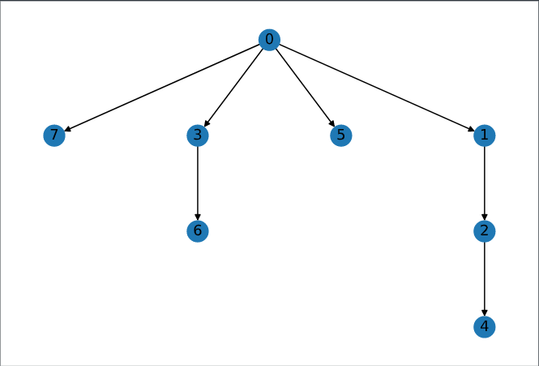
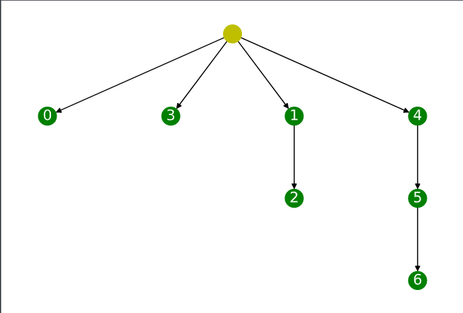
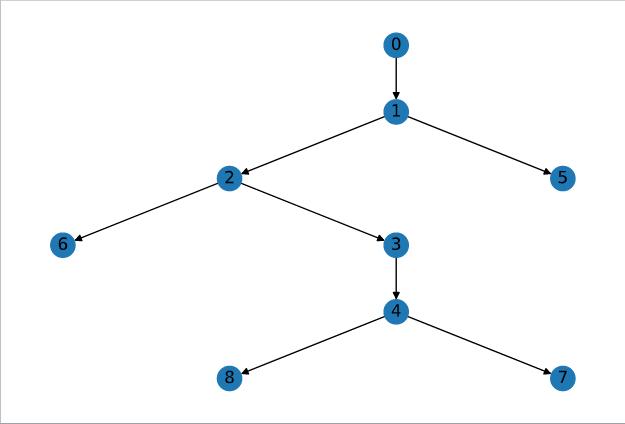
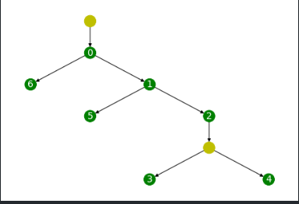

Phylogeny
Given a VAFs, the task is to generate ancestoral tree such that it adheres to the principles of perfect phylogeny.
Terminology
- M matrix of size $(m, n)$ denotes the presence of $m^{th}$ mutation in $n^{th}$ location of the tumor.
- V matrix of size $(m, n)$ represents VAFs of $m^{th}$ sample in $n^{th}$ location of the tumor.
- T tree, provides the ancestoral representation of mutations based on phylogeny of M matrix.
- Character, represents the language of mutation and in our case T or A denoting whether Tumor has been found at a particular site or not.
Perfect Phylogeny
A phylogeny tree is perfect if it follows the following principle,
- Mathematically, there should be no conflict between the mutations at any two sites.
$\quad$ for example,
\[M = \begin{bmatrix} 1&0&0&0\\ 1&1&1&0\\ 0&0&0&1\\ 0&1&0&0 \end{bmatrix}\]$\quad$ Column 1 and 2 in Matrix, M are in conflict while column 3 and 4 are not.
-
Intutively, it is because we can say that that column 3 is ancestoral clone of column 2 but we cant say the same for column 1 and 2. While with column 3 and 4, we can say these are not ancestoral clones.
-
Perfect Phylogeny, also ensures the invention of new character[1] is a rare events and does not happen in multiple sites across the phylogeny tree.
Generation of Evolutionary tree from Perfect Phylogeny
Given M, which has no conflict present in the columns, finding ancestors required as to
Input : M
function(map)
function(M):
sort(M) over columns.
append($C_0$, M), where $C_0 \in \{0\}.$
for $C, C'$ in columns, where $C' \ne C$:
if $C' \subseteq C$ then
draw an edge in T from $C \to C'$;
for each_node in T:
get(characters required)
check : any row uses these characters
if yes:
label node as that row.
Example:
\[M = \begin{bmatrix} 0&0&0&0&0&0&1\\ 0&0&0&0&0&1&0\\ 0&0&0&0&1&1&0\\ 0&0&0&1&0&0&0\\ 0&0&1&0&0&0&0\\ 0&1&1&0&0&0&0\\ 1&1&1&0&0&0&0 \end{bmatrix}, M_{sorted} = \begin{bmatrix} 1&0&0&0&0&0&0&1\\ 1&0&0&1&0&0&0&0\\ 1&0&0&1&0&0&1&0\\ 1&0&0&0&0&1&0&0\\ 1&1&0&0&0&0&0&0\\ 1&1&1&0&0&0&0&0\\ 1&1&1&0&1&0&0&0 \end{bmatrix}\]|  |  |
|---|---|
| Tree with nodes representing columns | Tree with nodes representing mutation, and Yellow color nodes representing derived mutation |
Importance of VAFs in phylogeny
|  |  |
|---|---|
| Tree with nodes representing columns | Tree with nodes representing mutation, and Yellow color nodes representing derived mutation |
When we added VAFs information to the mutations, we were able to infer inner relationship between the nodes which got lost with binary representation of M matrix.
Maximum Parsimony
- In real world experiments, we are not gurranteed to get perfect phylogeny from the sequencing, and that’s where the principle of maximum parsimony plays its role.
- Our aim is to generate parsimonious tree from the input data, i.e. a tree which can represent the M matrix in the best possible representation.
- Algorithm (It uses distance based clustering for generation of tree, and Fitcher’s small parsimony principle for labeling of derived clones)
Create a separate cluster for each node. Iteratively(till we have only one cluster left): Given all of the clusters, merge two clusters which has the minimum distance.where
\[distance(a, b) = \frac{distance(a) + distance(b)}{2},\]and initial distance between two clones are calculated as the edit distance between two clones.
Given : Tree
At first,
In bottom up fashion, for each location(k) of node i,$$
Cn_i^k = \begin{cases}
\cup(Cn_j^k) & if \cap(Cn_j^k) = \phi, where\ n_j = child(n_i)\\
\cap(Cn_j^k) & otherwise\\
\end{cases}
$$
In the top down fashion, for each location(k) of node i,$$
Cn_i^k = \begin{cases}
Cn_i^k = Cn_j^k & if Cn_j^k \in Cn_i^k, where\ n_j^k = parent(n_i^k)\\
Cn_i^k = random(Cn_i^k, 1) & otherwise
\end{cases}
$$
MixPhy
- With Fletcher’s Algorithm and Agglomerative clustering, we aimed to find the best parsimonious tree from the M but it does not takes into the account key factors that clones in M might have been mixed.
- That’s where the problem of Maximum parsimony comes into account. The problem states that we have to find the best steiner tree from the input M.
- MixPhy solved this Np-hard problem heuristically by restructing the input as a perfect graph and coloring rows which will get split into multiple clones.
- Algorithm
- For the given M, create a graph, G in which two columns are connected if either one is contained in another. where, contained is defined as if all of the element are either $\leq$ or $\geq$.
- As the containment is a transitive in nature,
- i.e. if {0, 0, 1} is contained in {0, 1, 1} and {0, 1, 1} is contained in {1, 1, 1} then {0, 0, 1} is also contained in {1, 1, 1}
- Thus the output graphs becomes perfect in nature, and the problem of finding cliques becomes polynomially complex.
- If we observe the complement of G is the conflict graph in which any two columns are connected if both are conflicting in nature.
- Thus coloring a clique of graph G, with the same color will lead to no two adjacent columns having the same color in the conflict graph.
- and for each row in M: if color of all of the mutated column is same, then we do not need to split it otherwise it will get splitted into k different rows where k are the number of unique colors required to color that row.